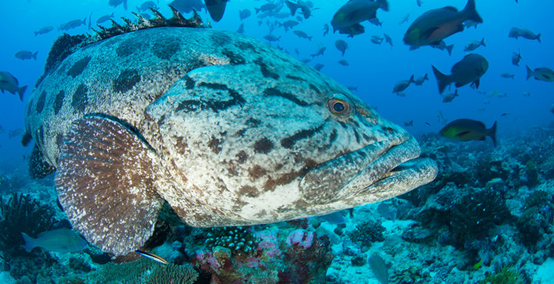
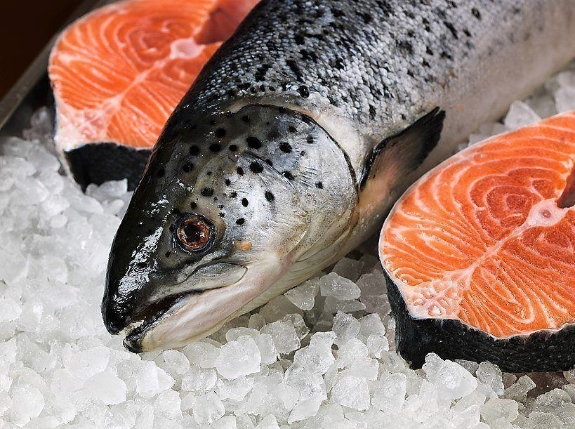
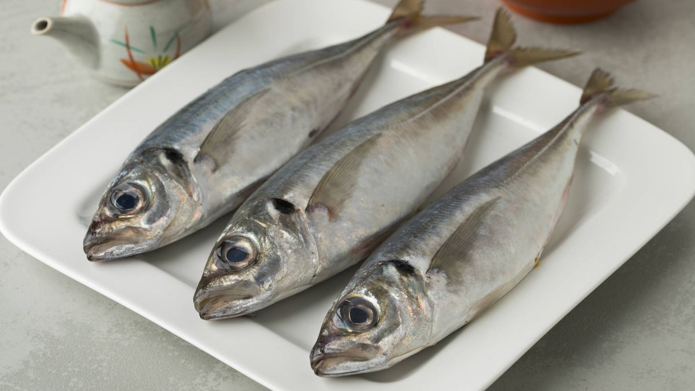
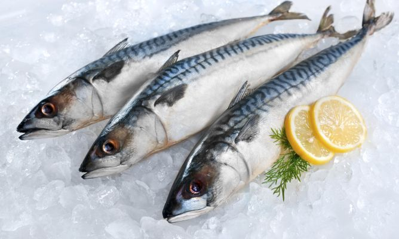
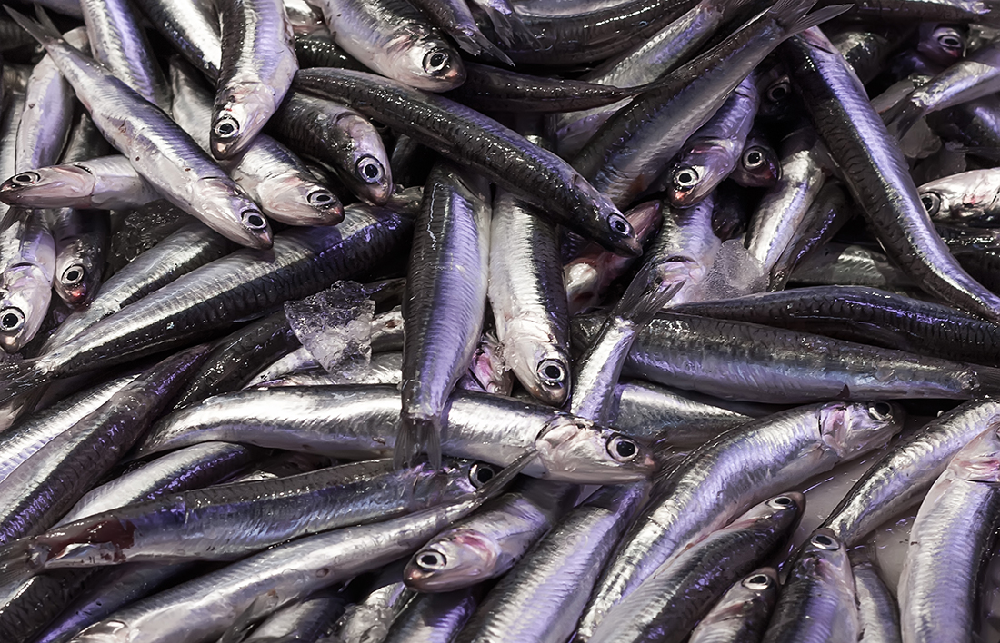
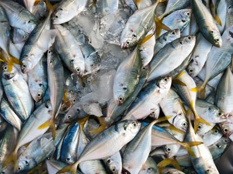
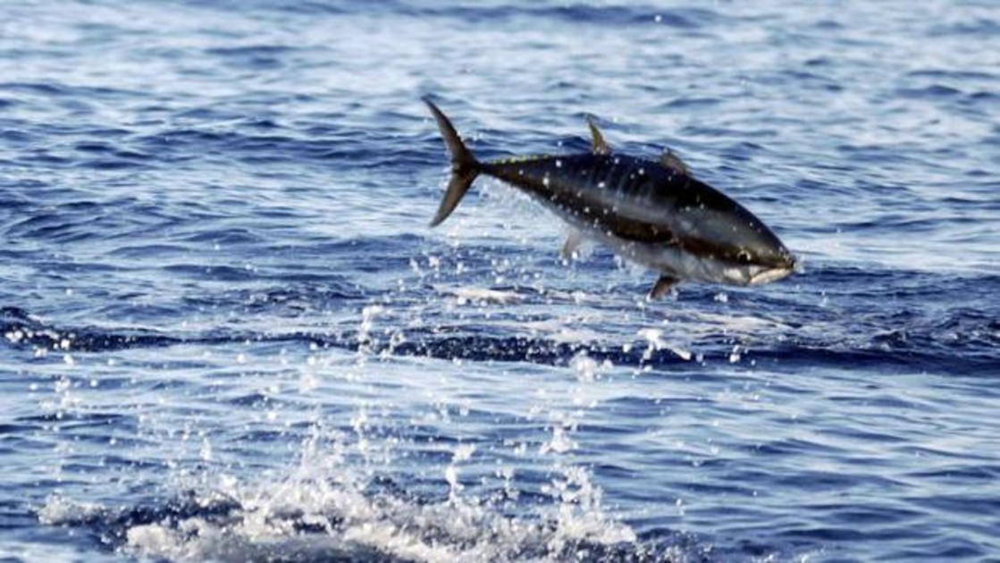
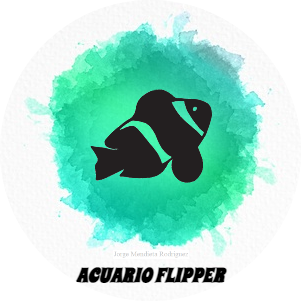

¡Estos son los peces mas ricos de Japon!
-
Mero

Dentro de la familia de los mero son muchas las especies que hay. También es llamado cherna en algunos sitios. El tamaño del Mero varía entre sus diversas especies, desde los 3 metros del mero australiano hasta los 10 cm de las especies más pequeñas. Pesa entre 2 y 300 kilos. En el Mediterráneo llega a pesar 50 kg de peso y medir 1.2 a 1.5 metros con una edad de 50 años. -
Salmon

Los salmones son anádromos, osea nacen en agua dulce , migran al océano y luego regresan al agua dulce para reproducirse . Sin embargo, las poblaciones de varias especies están restringidas al agua dulce durante toda su vida. El folclore dice que los peces regresan al lugar exacto donde nacieron para desovar . Los estudios de seguimiento han demostrado que esto es mayormente cierto. -
Jurel

El jurel es un pez de color azul y vientre blanco, perteneciente a la familia Carangidae, se caracteriza por tener un cuerpo alargado que mide entre 20 y 50 centímetros, con una línea lateral muy marcada y una mancha oscura en el opérculo (aleta de hueso duro que cubre y protege las branquias). En diversas regiones se le conoce como “chicharrón” o “chicharrilla” en función de su tamaño. Se alimenta de peces pequeños, crustáceos y calamares. -
Caballa

Es una especie de pez perciforme de la familia Scombridae. La caballa es un pez teleósteo perteneciente a la familia de los escómbridos, orden Perciformes. Abunda en el océano Atlántico y en el mar Mediterráneo, donde es objeto de una intensa pesca debido a su apetecible carne. La caballa es un pez gregario que emprende largas migraciones. En primavera, vuelve a aguas más cálidas. -
Boqueron

Es un pescado azul de unos 15-20 cm de largo (tamaño adulto), con un alto valor comercial, y que es capturado fundamentalmente para alimentación humana. En la cornisa cantábrica se le conoce como anchoa, al igual que cuando son procesadas mediante un proceso de salazón y posterior envasado con aceite vegetal, dando así lugar a una semiconserva. -
Carite

La mayoría son valoradas como alimento por lo que son explotadas intensamente por pesquerías comerciales y artesanales, como también por la pesca deportiva.9 Entre las especies explotadas en la pesca comercial, destaca la especie carite lucio , distribuida en el Atlántico desde el norte en Canadá hasta el sur de Brasil y presente todo el año desde Luisiana hasta Ceará, cuyas capturas anuales sobrepasan las 12,000 toneladas en los últimos diez años. -
Atun

Nadan con velocidades de crucero de 3 a 7 km/h, pero pueden alcanzar los 70 km/h y, excepcionalmente, son capaces de superar los 110 km/h en recorridos cortos. Como son animales oceánicos pelágicos, viajan grandes distancias durante sus migraciones (recorriendo de 14 a 50 km diarios), que duran hasta 60 días.

Acuario Flipper
Ver menú